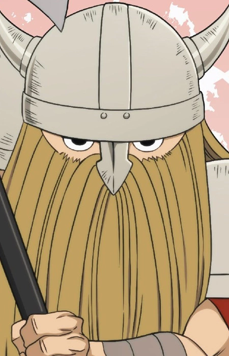
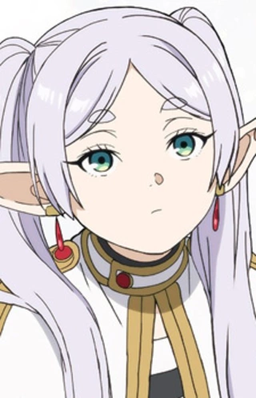
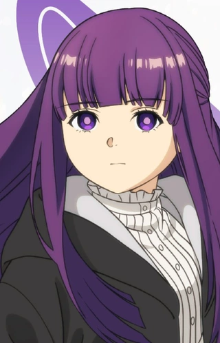
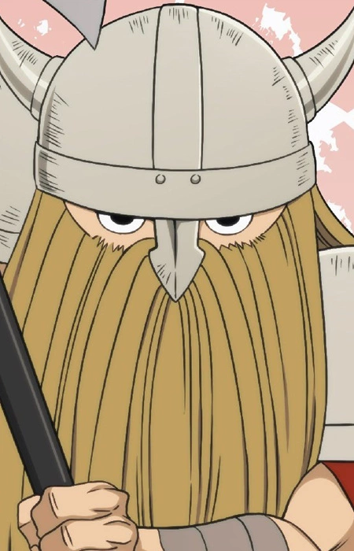
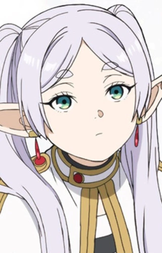
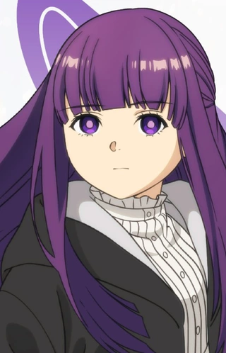

Аниме, рассказывающий о жизни эльфийского волшебника Фрирен после победы над Королем Демонов. Действие происходит спустя 50 лет после их приключений, когда Фрирен, практически бессмертная, отправляется в новое путешествие, чтобы лучше понять мир людей, которые живут и умирают, а также попрощаться с умершим Химмелем.
 





Главные Герои: Гимель; Айзен; Гайтер; Фрирен; Ферн; Старк;